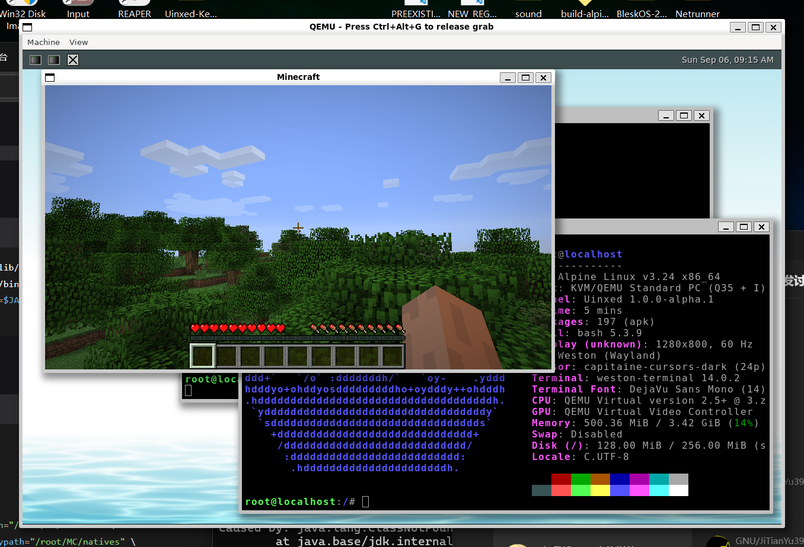

把操作系统的每一层都写一遍，写到能跑为止。
2022 年，几个学生因为一个跑在 MP4 方案上的狗头 OS 聚在一起，从此开始一层一层往下写——Python 里的模拟系统、UEFI 上的真内核。现在维护 PySpOS 与 SpaceOS 8，SpaceOS 6 / 7 已经归档，过程全部公开。
格式与 src/kernel.py、src/shell/sys_cmds.py、src/apps/hello.py 的实际输出一致；时间、Python 版本、用户名随环境而变化。
进行中的，和已归档的
四个都跑起来过，两个还在往前走。先看状态，再决定点进哪个。
在真机器上跑起来的桌面
SpaceOS 8 的 X11 兼容层上跑 DOOM，Minecraft 则是团队实测的试金石——下面这张截的是一次普通的启动。

先看几个数字，再决定读多深
- 113PySpOS 自动化测试
- 29.2 万SpaceOS 8 用户态代码行
- 18.1 万Uinxed 内核代码行
- 0–462Linux 6.12 syscall 编号
先做对，再做快。读源码的人，应该看到和真实内核一样的东西。 — GoutouStdio
六条工作习惯
这几条原则贯穿 PySpOS 与 SpaceOS：读源码的人应该看到和真实内核一样的东西。
-
对标真实内核
调度器照着 Linux 6.6+ 的 EEVDF 实现：nice 权重表、vruntime 推进、虚拟截止期，一个不省。
-
权限分层
Ring 0–3 分层，特权操作一律走 syscall 转发，不让子进程直接碰父进程内存。
-
模块化
命令走元数据注册表。3.2.0 把 1217 行的
main.py拆成了src/shell/*。 -
开源
核心代码全部在 GitHub 公开，MIT 协议，包括那些写砸了又重写的部分。
-
自己写底层
SPF 脚本格式、SPFS 文件系统、curses 布局，都是为了让原理看得见而自己写的。
-
社区驱动
GoutouStdio 工作室主导，社区开发者共同维护。学生自发组织的项目，不涉及商业活动。
从 MP4 方案到自研内核
-
2022
狗头 OS
工作室创立，从网上狗头 OS 项目起步的“MP4 架构”折腾，攒下第一批关注者。
-
2023
互相学习
开始读别人的代码，过程中和原作者认识，互相学习。
-
2024
VimdropOS 与第一版 SpaceOS
基于 ViudiraTech 的 VimdropOS 做出第一版 SpaceOS，开启新篇章。
-
2025
UEFI 与 SpaceOS 6
深入研究 UEFI，基于 Uinxed-Kernel 研发正式的 SpaceOS。
-
2026
SpaceOS 7 自研与 SpaceOS 8
UEFI 完全搞懂之后走全栈自研；随后把方向收回内核与桌面可用的 SpaceOS 8。